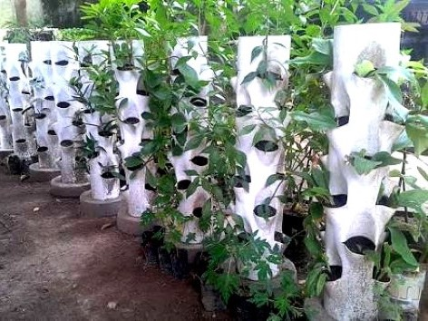

ARTIKEL
Apa itu Vertikultur? Kenali dan Pahami Tips Menanam dengan Sistem Vertikultur Paralon
___

Pandemi Covid-19 lalu mengharuskan seluruh lapisan masyarakat untuk "Stay at Home" atau di rumah saja atas himbauan Pemerintah. Hal itu bertujuan untuk mencegah penularan Virus Corona agar tidak semakin meluas. Namun, hal itu membuat masyarakat awam lama-lama merasa bosan dengan kegiatan yang itu-itu saja. Akhirnya muncul tren berkebun di lingkungan rumah/pekarangan. Bahkan lahan sempit tidak menjadi halangan bagi masyarakat perkotaan untuk mengikuti tren tersebut. Untuk menyiasati berkebun di lahan yang sempit, ditemukanlah inovasi budidaya tanaman dengan pola vertical/bertingkat yang kini dikenal dengan vertikultur. Sistem pertanian vertikultur merupakan konsep penghijauan yang cocok untuk daerah perkotaan dan lahan terbatas. Misalnya, lahan 1 meter mungkin hanya bisa untuk menanam 5 batang tanaman, dengan sistem vertikal bisa untuk 20 batang tanaman.
Apa Kelebihan Menanam dengan Sistem Vertikultur?
Kelebihan sistem pertanian vertikultur adalah :
- Efisiensi dalam penggunaan lahan. Tanaman disusun secara bertingkat, sehingga tidak memerlukan lahan yang luas untuk budidaya tanaman.
- Penghematan pemakaian pupuk dan pestisida. Budidaya tanaman dalam pot bersusun pastinya membutuhkan media, pupuk serta pestisida yang lebih sedikit, jika dibandingkan dengan budidaya tanaman di areal lahan yang luas.
- Dapat dipindahkan dengan mudah karena tanaman diletakkan dalam wadah tertentu.
- Mudah dalam hal monitoring/pemeliharaan tanaman. Hal ini tentunya berkaitan dengan areal kebun yang sempit,sehingga pemilik kebun lebih mudah melakukan perawatan tanamannya, baik dalam pemupukan, penyiangan, maupun pengendalian hama serta penyakit tanaman.
- Sebagai salah satu upaya untuk mengurangi sampah, karena kita bisa memakai peralon yang sudah tidak terpakai.
Pada dasarnya teknik bercocok tanam vertikultur tidak jauh berbeda dengan bercocok tanam konvensional, hanya cara meletakkan/menyusun tanamannya saja yang berbeda. Tingkat kesulitan dalam bercocok tanam secara vertikultur tergantung pada teknik, sistem dan model yang digunakan. Salah satu system pertanian vertikultur adalah Vertilon (Verikultur Paralon). Ditilik dari namanya, Vertilon memanfaatkan paralon sebagai wadah tanamnya.
Jenis tanaman yang bisa dibudidayakan pada umumnya sama dengan tanaman dalam budidaya konvensional. Berbagai macam sayuran, mulai dari sawi, pakchoy, kangkung, bayam seledri dapat ditanam dalam vertilon. Sistem Pertanian Vertikultur, termasuk di dalamnya Vertilon, mendukung pemenuhan gizi keluarga yang mudah,murah,hemat dan yang pasti jauh lebih sehat, apalagi jika kita memberi nutrisi tanaman dalam bentuk pupuk organik dan mengendalikan hama dengan pestisida hayati.
Bagaimana Langkah-Langkahnya?
Peralatan yang digunakan :
- Paralon
- Gergaji
- Cutter
- Meteran
- Kayu berdiameter 6 cm yang diruncingkan
Langkah pembuatan vertikultur paralon :
- Potong paralon sepanjang 1 meter.
- Buat lubang tanam yang diawali dengan mengukur jarak lubang tanam.
- Lubang tanam dibuat menyilang dengan ukuran jarak sekitar 60 cm, setelah tempat yang akan dijadikan lubang tanam siap, selanjutnya gergaji paralon dengan lebar kurang lebih 5 cm.
- Bagian bawah bekas gergaji tadi dipanaskan hingga paralon menjadi lebih lentur.
- Langkah selanjutnya setelah paralon lentur yakni memasukkan kayu yang ujungnya telah diruncingkan, kemudian mendinginkan paralon menggunakan kain basah
- Masukkan konstruksi/paralon ke dalam dudukan yang terbuat dari semen, agar paralon dapat berdiri tegak.
Cara Penanaman dan Perawatan
Bercocok tanam vertikultur membutuhkan media tanam yang remah tidak bersudut-sudut, tanah lapisan atas yang bersifat gembur baik digunakan sebagai media vertikultur, karena penetrasi perakaran lebih mudah dan kuat dalam pencengkeraman. Selain kuat untuk mencengkeram, media juga harus mudah dalam mendistribusi nutrisi dalam suatu konstruksi. Media tanam yang baik untuk digunakan diantaranya berupa campuran tanah, sekam padi dan pupuk organik dengan perbandingan 1:1:1, campurkan hingga merata, kemudian masukkan kedalam konstruksi/paralon hingga penuh. Kemudian siram media dengan air dari atas tepat di tengah konstruksi sebanyak 1-2 gembor per konstruksi.
Jumlah tanaman satu konstruksi sangat tergantung pada jenis tanaman, namun pada dasarnya tanaman tidak saling tumpang tindih. Penanaman dapat dilakukan secara langsung menggunakan benih/biji atau pemindahan tanaman menggunakan bibit cabutan hasil dari persemaian biji. Cara pembibitan pada vertikultur sama dengan cara menyemai pada sistem penanaman konvensional. Pada umumnya setelah bibit berumur 18 hari atau memiliki 2 pasang daun maka bibit tersebut siap ditanam. Benih ditanam pada lubang tanam dengan kedalaman 0,5-1 cm, sedangkan jika menggunakan bibit cukup satu batang per lubang tanam dengan kedalaman tanam sekitar 3 cm.
Pemeliharaan tanaman yang perlu dilakukan adalah membersihkan lingkungan dan gulma, kebersihan lingkungan juga perlu dilakukan dengan melakukan penyiangan tanaman. Penyiangan tanaman dilakukan secepat mungkin dengan mencabut gulma yang tumbuh disekitar tanaman maupun konstruksi. Keberadaan gulma sangat mengganggu pertumbuhan tanaman bahkan selalu berkompetisi memperebutkan nutrisi dengan tanaman utama. Penyiangan tanaman dilakukan sebelum gulma berbunga atau pembentukan biji, karena biji gulma mudah tersebar. Selanjutnya gulma yang telah terkumpul, dikeluarkan dari area tanaman untuk dibenamkan pada lokasi atau sekitar lokasi.
Agar dapat tumbuh maksimal, pemupukan dilakukan mulai dari pupuk dasar, sementara pupuk susulan pertama dilakukan pada fase pertumbuhan vegetatif awal, pupuk susulan kedua diberikan pada fase pertumbuhan vegetatif akhir. Pupuk susulan ketiga diberikan pada fase pengisian buah atau pembentukan buah dan pemupukan susulan selanjutnya diberikan untuk mempertahankan pertumbuhan tanaman.
Tanaman yang dibudidayakan dengan cara vertikultur memerlukan pengairan yang cukup teratur untuk pertumbuhan, terutama pada saat pengisian buah. Pemberian air dilakukan dengan cara menyiramkan air menggunakan selang atau gembor ke dalam media pada konstruksi sampai kapasitas lapang, yakni air menetes keluar konstruksi. Konstruksi diupayakan selalu lembab agar kebutuhan air tercukupi. Pemberian air dilakukan dengan cara menyiramkan air menggunakan selang atau gembor ke dalam media pada konstruksi sampai kapasitas lapang, yakni air menetes keluar konstruksi. Konstruksi diupayakan selalu lembab agar kebutuhan air tercukupi. Frekuensi pemberian air selalu meningkat agar rasio transpirasi ( transpirasi adalah proses hilangnya air dari tumbuhan melalui permukaan daun atau bagian lain dari tumbuhan ) dan penyiraman seimbang.
___
Demikian uraian singkat mengenai Apa itu Vertikultur? Kenali dan Pahami Tips Menanam dengan Sistem Vertikultur Paralon. Untuk lebih jelasnya, kalian dapat menonton Video Cara Menanam Sayur Sistem Vertikultur Paralon di bawah ini.
___